5580P CONNECT PANEL
- Path
- Descriptions > 55 ELECTRICAL EQUIPMENT > 5580 SPECIAL ACCESSORIES > 5580P CONNECT PANEL
- Kind
- system description
- Applies to
- all engines; all production periods
- Interactive page
- https://sloeber94.github.io/elrnDB-fPnd/en/#/169000025
Applies to: all engines; all production periods
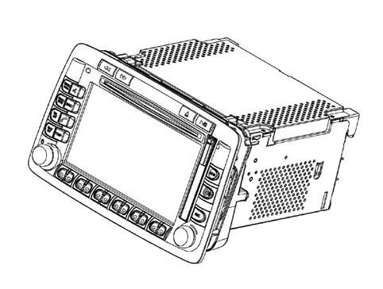
CONNECT NAV + DESCRIPTION
Dimensions: 2DIN box with front panel
Modules included:
- Radio
- CD player - Audio + CD - MP3 ROM
- GPS navigation system module
- GSM phone module
- Independent navigation with maps
- Independent navigation with maps
- Assistance services
- 256 colour 6.5" TFT display
- External CD CHANGER system (if present)
- Built-in voice recognition module
- WAP protocol
Internal modules
The system modules or the modules to which the system can be connected for obtaining information or requesting services are different.
Cd rom player
CONNECT is equipped with a CD ROM player that is able to read and manage CD ROMs and audio CDs. The Audio media may be normal commercial audio CDs or CD ROMs containing files in MP3 format (all levels). Other acceptable ROM media include official Marelli media that contain an updated copy of the CONNECT management software and also the map database required for navigation.
Cd changer
CONNECT is also designed to be connected to an external CD Changer and to accept analogue audio output.
Gsm module
The CONNECT system is equipped with a GSM Dual Band module and micro format SIM Card reader (that allows the user the insert a SIM Card). There is also an external microphone (for hands free use and voice recognition) and preparation for the connection of a hand set.
Radio - cd module
General specifications:
- Music audio power: 4x35W
- 5 band graphic equalizer
- Easy to manage menu for the adjustment of the radio settings and any external interfaces (CD-Changer)
- Remote control from the steering wheel
- Possibility of interface with external CD-Changer via ASCI-BUS line.
- Volume control according to the speed (via CAN)
- If a voice recognition module is fitted, several of the commands can be voice-activated.
Radio specifications:
- RDS
- RDS - TMC (Traffic Message Channel)
- EON (Enhanced Other Network)
- TA (Traffic Announcements)
- Tuning on the following bands: USW (87.5- 108 MHz) (FM), MW (153- 279 kHz) (AM), LW (531- 1602 kHz) (AM)
- Possibility of programming: 24 FM stations (including 6 stored by autostore), 6 MW stations, 6 LW stations, 6 stations that can stored by autostore on the MWST band.
- 2 scan modes (short lislten to a station and automatic transfer to the next): Scan on the frequency band used; Scan of stored stations.
- Possibility of selecting programmes via PTY (on FM bands only).
- Local/Distant setting.
Audio specifications:
- Bass
- Balance
- Fader
- Loudness
- Treble
- HI-FI system active control
- 5 equalizing curves: BEST (manufacturer's equalizing data) Rock, Jazz, Classical, MANUAL (can be set using 5 band graphic equalizer)
- Soft mute.
CD specifications:
- Motorized loading and ejection
- TPM function (Track Program Memory)
- Shuffle function
- Repeat
- Skip
- Pause
- Compression: activates the CD noise dynamic reduction circuit
- CD Naming: CD identification (max 30, including CDC).
MP3 CD specifications:
- Play List function (such as TPM for Audio CD)
- Functions associated with the Play List: Scan, Repeat (one or all tracks), Pause, Skip
- Maximum number of MP3 tracks considered for each CD: 999 (if the number of MP3 files contained in the CD ROM is higher than this limit, only the first 999 will be considered).
- Compression: activates the CD noise dynamic reduction circuit.
CD Changer specifications
- Scan function
- Repeat track or entire cartridge function
- Shuffle CD or shuffle all function (one CD or all CDs)
- CD Naming:
- Compression: activates the CD noise dynamic reduction circuit
- Management of controls from steering wheel
- The audio module can be managed by the buttons on the steering wheel.
Management of controls from steering wheel
- The audio module can be managed by the buttons on the steering wheel.
System activation
The CONNECT system may be activated in two different modes:
- Automatic activation with the ignition key ON
- Manual activation by means of ON button
- Emergency manual activation by means of SOS button
Automatic activation
When the ignition key is turned to MAR position, the CONNECT system turns on automatically to make all the functions described in this chapter active or enabled.
Manual activation
With the ignition key in STOP position, the CONNECT system comes on when the ON button is pressed to make the following modes available:
- MAIN
- AUDIO
- NAV
- TEL
- SOS and SERVICE (Targasys)
System deactivation
The CONNECT system may be activated in two different modes:
- deactivation independent of the ignition key
- deactivation dependent on the ignition key
Deactivation independent of the ignition key
When this mode is active, the CONNECT system may be turned off by pressing the ON button.
The display shows the message DEACTIVATION PROCEDURE IN PROGRESS, WAIT A FEW MOMENTS.
Deactivation dependent on the ignition key
When this mode is active, the CONNECT system may be turned off by turning the ignition key to STOP.
Languages available
The following languages are available for both strings of displayed text (menus) and navigation voice messages: Italian, English, French, German, Spanish and Portuguese.
The voice recognition unit language may be set independently of the menu and navigation message language. The same languages are available.
FRONT OF THE CONNECT NAV+
Front view
.
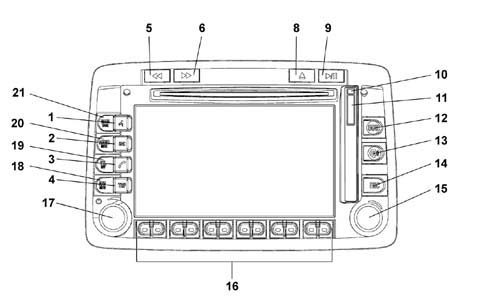
Key to pushbuttons
There are 28 buttons and two rotary selectors (a wheel and a pushbutton) on the front panel of the CONNECT.
Some keys perform multiple functions that depend on the system operating conditions active at that time.
Activation of the selected function is controlled, in some cases, by the length of time for which the button is pressed (short or long push) as described in the following table.
Key | Short press on key (less than 2 second) | Prolonged press on key (longer than 2 seconds) |
|---|---|---|
1 | Activation or interruption of the Voice Recognition function | Activation or interruption of the Voice Recognition function. Activation of the Voice Memo function, this can be interrupted by a further short or long press on the button |
2 | Choice of audio source:FM1/2/3/AST –MW/LW/AMAST – CD – CDC | - |
3 | - Send the selected phone call - Reselect the last number dialled and then press the key with 5 seconds to send a call to the number - Accept incoming phone call | - Refuse incoming phone call - Stop dialling a new phone number - Interrupt a phone call already in progress |
4 | Activate TRIP on-board computer mode | - |
5 | Radio mode: search for the first radio station at a lower frequency CD mode: select the previous track. MP3 mode: select the previous track. | Radio mode: activate scanning function for lower frequencies, station scanning will stop at the first station with an audible signal. CD mode: select the previous track. MP3 mode: move to the previous 10 tracks or the previous folder. |
6 | Radio mode: search for the first radio station at a higher frequency CD mode: select the next track. MP3 mode: select the next track. | Radio mode: activate scanning function for higher frequencies, station scanning will stop at the first station with an audible signal. CD mode: select the next track. MP3 mode: move to the next 10 tracks or the next folder. |
7 | CD housing | - |
8 | Eject navigation CD-ROM or audio CD | - |
9 | Play/stop for CD/CDC | Pause for CD/CDC |
10 | SIM CARD housing eject key | - |
11 | SIM CARD housing | - |
12 | Activate SOS mode (assistance functions and services) | - |
13 | Targasys mode activation | - |
14 | Exit from a selection menu or leave a submenu of a higher menu | - |
15 | Knob for selecting the required function. Press to confirm | - |
16 | Multifunction key. Function depends on active mode. The function is always identified by graphic buttons that appear on the display. In some cases, the graphic button area may cover one or more adjacent multifunction keys: the function of the keys under this area is the same | - |
17 | Knob for adjusting volume level. Press to turn the system on/off | - |
18 | Activate navigation mode | Activate/deactivate the MUTE function for navigation information |
19 | Activate phone mode | Phone on/off |
20 | Activate Audio mode | Activate/deactivate the MUTE function for audio sources |
21 | Activate Main mode | Dark mode: The display is darkened completely. The display is lit again by pressing the MAIN, TEL, SOS buttons or by receiving a phone call |
MAIN FUNCTION
The following modules become available when the system is turned on:
- AUDIO
- NAV
- TEL
- TRIP
The upper status bar displays the current time, GPS and GSM signal intensity, date (day, month, year), outdoor temperature and current operating mode (e.g. MAIN).
The dedicated phone module window includes:
- network provider
- an envelope icon that indicates an unread text message;
- an arrow icon to indicate that call transfer is active
The audio source window includes:
- in Radio mode: the current station band, frequency and RDS message.
- In CD/MP3/CDC mode: display of the active source CD or CD1-10 or MP3, track or MP3 file number playing and playing time.
The Trip window supplies various information items: e.g. average speed and range or (by turning the appropriate knob) journey time and average fuel consumption.
The screen shows a map at the same scale used on the navigation system display
Graphic buttons that appear on the lower part of the display are activated by multifunction keys located below them.
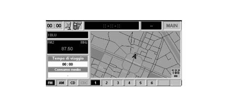
Code activation and recognition procedure
The Connect (NIT) includes an ANTITHEFT function that prevents it operating in the case of theft.
The NIT is installed during producition and connnected to the CAN network in order to establish communication with the Body Computer and store an antitheft code known as the Exchange Code.
At each subsequent Key On (and even if the battery is disconnected), an automatic authentication procedure is repeated: if the Exchange Code check is positive, the system begins to operate. If the codes compared are not the same, a message appears on the display asking the user to enter a manual code (Master Code - 4-figure code from 1111 to 6666) that is shown on the radio code card.
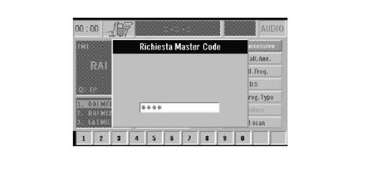
AUDIO MODULE
Audio sources
Possible audio sources include standard sources (Radio Tuner, Audio CD/MP3 and CD Changer) whose specifications are detailed in the rest of the chapter. PTY31 Alarms (Program TYpe) and Traffic Announcements, Sources linked to other modules such as the telephone, telephone ringing, voice recognition and voice synthesis for navigation are treated as separate functions.
Standard source
One of the standard sources is activated (possibly interrupted by a Traffic Announcement). The navigation messages are available.
Phone call in progress
A telephone call is activated. If it is an incoming call, the source activated before the phonecall will be restored at the end of the conversation. The navigation messages are available.
Ringing
Sound to indicate incoming call. The navigation messages are not available.
Voice recognition
The dialogue between the recognizer and the user is activated. The navigation messages are not available.
Pty31 alarm
Due to the receipt of a PTY31 message from the tuner. The navigation messages are available.
Tuner function
FM, MW and LW tuner with RDS, EON, PTY and TP management. If a voice recognition module is fitted, several of the commands can be voice-activated.
Cd audio function
The Audio CD/MP3 source and hence the function can be selected from amongst the various audio sources on the CONNECT unit.
Various commands are available to the user through the direct buttons (front panel/steering wheel controls) and those selected from the menu on the screen If a voice recognition module is fitted, several of the commands can be voice-activated.
External cd changer management
The CD Changer source (Audio) and hence the function can be selected from amongst the various audio sources on the Connect unit. This function is only available if the CONNECT is connected to an external CD Changer of the type described previously.
Various commands are available to the user through the direct buttons (front panel/steering wheel controls) and those selected from the menu on the screen If a voice recognition module is fitted, several of the commands can be voice-activated.
Operation
Press the AUDIO button to access the Connect Audio module screens.
Three sections appear at the left of the screen. The larger section at the top displays: the Frequency Band, the frequency and name of the radio station playing at the time and other information connected with the radio station.
The two smaller sections display the 6 radio stations stored in the 6 memory positions for each frequency band.
A menu appears at the right part of the screen where the user can make radio settings, namely:
- TA- Traff.Ann.
- AF- Alt.Freq.
- RDS
- PTY- Prog.Type
- AUTOSTORE
- BAND SCAN.
The user can access the NEXT MENU from the menu, where the 6 preset stations may be scanned: PRESET SCAN
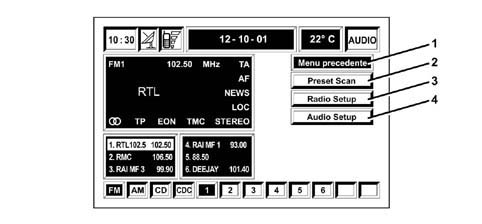
1 - Previous menu
2 - Preset scan
3 - Radio setup
4 - Audio setup
It is possible to carry out radio SET UP (RADIO SET UP) (LOC/DX, MONO/STEREO, REGIONAL, ECC…) and AUDIO SET UP (BASS, TREBLE, LOUDNESS, EQUALIZER, ETC…)
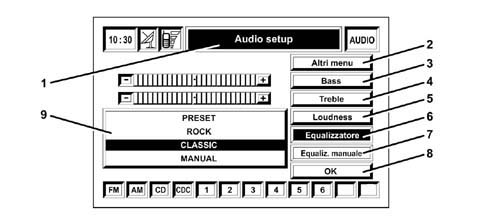
1 - Audio setup
2 - Other menus
3 - Bass
4 - Treble
5 - Loudness
6 - Equalizer
7 - Manual equalizer
8 - Confirm key
9 - Preset equalization
For the equalization, the following preset settings may be used:
- ROCK
- JAZZ
- CLASSIC
Or use the manual equalizer, where the user can adjust the 5 frequencies manually as shown in the figure.
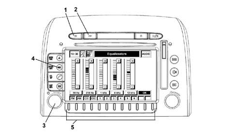
1 - Manual search key for radio station frequencies
2 - Manual search key for radio station frequencies
3 - Volume adjustment knob
4 - SRC button
5 - Multifunction keys
Press buttons 1 and 2 to conduct a manual radio station search
Sound volume is adjusted using wheel 3.
Press key 4 (SRC) to change the audio sources in this sequence:
- FM1
- FM2
- FM3
- FMAST
- LW
- MW
- AM
- AMAST
- CD
- CDC
Keys 5 activate the function identified by the symbol shown in the window in the display above the key.
In CD or CDC mode, the menu to the right of the display will be as shown in the following figure.
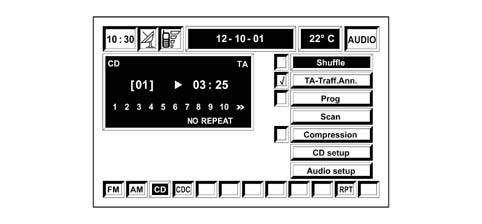
Cd - mp3 mode
The Connect systemis able to recognise the type of compact disc inserted.
During the recognition stage, the display shows the message "Reading CD... " and then the system detects whether the CD inserted contains musical tracks recorded in MP3 mode (e.g. music files with the extension .mp3).
The Connect system automatically organises the tracks present on the CD in mp3 format into folders and creates sequential ists of all folders that contain MP3 tracks.
A CD could contain thousands of mp3 files. In this case, a maximum limit is set for the number of files managed. The system will consider only the first 999 music tracks and the display shows the following message for about 7 seconds: "Attention, only the first 999 MP3 CD tracks will be managed by the system
Once the MP3 CD is inserted and recognised by the system, the main screen shows the following functions:
- Set Up
- Define Playlist
- Playlist
- Compression:
- TA- Traff.Ann.
- Scan
- Shuffle
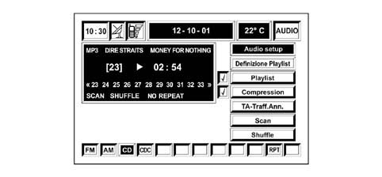
PHONE MODULE
The Connect system is equipped with a Dual Band GSM mobile phone with handsfree operation.
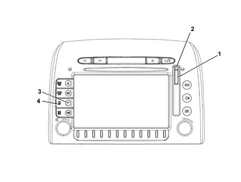
1 - SIM card housing
2 - SIM CARD housing eject key
3 - Send the selected phone call Accept incoming phone call
4 - Activate phone mode
Functions available to the user
The phone module allows normal phone activity, text messages, support for Service Calls to the Provider (described in the relevant chapter) and Internet access by means of WAP (Wireless Access Protocol).
Phone functions
The phone module is used to:
- accept an incoming phone call.
- refuse an incoming call
- send a phone call
Sim data base access functions
The SIM Card database allows the following options:
- Read the list of phone numbers saved on the SIM card.
- Enter a phone number on the SIM
- Delete a phone number from the SIM.
- Copy the contents of a SIM phoneboook to the CONNECT phonebook and viceversa.
- Copy the contents of a SIM phonebook on another SIM.
Applies to: engines: 1.1, 1.3 JTD 16v; all production periods
Information is also provided on the status of the SIM (SIM Card corrected or incorrectly inserted) and the space available in the SIM memory.
Applies to: all engines; all production periods
Last number functions
The module is able to store the last 10 numbers called to help the user with repeat calls.
Sms message functions
The module manages text messages for the user and also from the Service Provider. It is therefore possibile:
- to display received messages that have not yet been read (full list or selected message).
- to display received messages that have been read or saved (full list or selected message).
- save a received message.
- delete a message (recently received or already saved).
- send a message to a particular number entered by the user.
- set up the Service Provider number for text messages.
Gsm status display functions
It is possible to obtain information on:
- aerial signal quality
- network operator's name
- presence of text messages received but not yet read.
Configuration functions
"Call divert": incoming calls can be diverted to another phone number, specifying the type (Voice, Data..)
Network operater management: the module manages network operator selection (manual or automatic search) and also the user of a list of preferred operators (display, delete, input and overwrite functions).
Security: use of PIN code, PUK, display number of PIN input attempts remaining before PUK code requested, change PIN code.
Access to a WAP site requires data to be loaded into the memory (in technical terms: loading of the deck) and the first page (card) is not displayed until the end of the operation. The central part of the screen shows the text, links and selection/input options. The right side of the display shows the software keys (Vertical softkey) that are used to activate the possible card actions (max 6, usually in English).
For example, the following functions may be shown:
For example, the following functions may be shown:
- Next, Help, Back: key presence, number and functions depends on card content.
- The softkey "Card list" allows direct access to a card in the deck that has been loaded.
The lower bar shows browser functions that can be activated by means of the reconfigurable keys, described below:
- “Home”: access to the page set up as Home.
- "Previous": shows the previous card.
- “GO”: access to the specified page (insert address or bookmark).
- "In phonebook": saves the current address in the user bookmark file.
- cursor up, cursor down: up/down to scroll within a text window. If the card cannot be displayed in a single screen (the position in the page is displayed by the scroll bar on the left).
An hourglass is shown when data is loading.
ELEMENT SELECTION
To highlight/select active elements (link, selections, input, softkeys) in the card, use the selection knob to the left (rotate). Only the items shown on the screen can be highlighted. If a card takes up more than one screen, the scroll up/down options will be active in the lower bar.
CARD SELECTION
One of the cards in the loaded deck may be selected directly.
A WAP site may be accessed by specifying the address or selecting it from the list of bookmarks (if this operation is allowed by the Provider).
Phonebook.
The address of the WAP site may be stored in the phonebook (bookmarks) and associated with a name if required. The address is stored when the OK key is pressed.
Procedure for general use
Before the phone module can be used, the user must enter a PIN security code whenever the CONNECT system is turned on after being turned off (unless "exclude PIN request" has been set under Settings). Unless the PIN code is entered, the system can be used only for emergency calls (112 in Italy) and not normal user calls or for the Service Call function.
If an incorrect PIN is entered three times, the module is bound to request the PUK code to release the block.
Management of controls from steering wheel
The phone module can be partly controlled by the buttons on the steering wheel.
Audio status repetition on the control panel display
The CONNECT module sends various information to the control panel via the CAN network on phone section operating status.
Voice recognition
Voice recognition module with speaker dependent functions (Phonebook, Navigation address book, Radio Station memory) and speaker independent functions for Radio, CD, CDC, Phone and Services, Navigation System. The speaker dependent function allows a voice command (prerecorded by the user) to be associated with a phone number in the phonebook, a stored radio station or a destination present in the destination list (personal).
The speaker independent functions allow the activation of general controls (e.g.: "Radio Autostore", "CD play", "Navigatore Zoom", ...).
Voice command
After pressing the VR key, the user can speak a voice command. The module compares the sample with those present in its memory and, if recognised, allows the relevant command to be activated (call one fo the phone numbers in the phonebook, select one of the preset stations as an audio source, start the autostore procedure for the radio stations in the current band, change to CD source, etc...) The system guides the user using voice information (Example - After pressing the VR key, the user says: "Call number" and the Connect responds: "Number please").
Speaker dependent functions
RECORDING RADIO VOICE COMMAND: When storing a radio station in one of the positions available in the radio bands (FM1, FM2, FM3….), the user can associate it with a voice command. Upon the user's request, this gives rise to an initialisation stage when the module asks for a voice command to be entered and repeated and then confirms recording.
RECORDING PHONE (NAVIGATION SYSTEM) VOICE COMMAND: When entering a number and associated name in the phone book the user can associate a voice command with this item in the same way as with the radio stations.
RECORDING NAVIGATION SYSTEM VOICE COMMAND: When entering a destination in the navigation system address book the user can associate a voice command with this item in the same way as with the radio stations.
DELETING A VOICE COMMAND: The voice commands described above may be deleted or modified.
Speaker independent functions
The system does not require an initialisation stage to use this function (i.e. recording of voice samples by the user). Although the terminology has been designed to include commonly used phrases, it is nevertheless advisable to read the keyword table in the Connect User Handbook. As an example, the keywords for the CD player are given below.
LANGUAGES AVAILABLE: The following languages are availalbe for requests and communication with the user: Italian, English, French, German, Spanish and European Portuguese.
Record voice messages
This module, known as the Voice Memo, allows the user to record and re-enter voice messages up to 3 minutes long. The messages are recorded sequentially in the frame and a warning message is displayed if the memory contains messages.
Recording: the recording activated by the user can last up to 3 minutes and terminates automatically when the available time is up. The user can interrupt the recording manually in any case.
Voice memo
The following functions are available:
- Play: plays the message
- Stop : interrupts playback or recording
- SKIP : skips to the next message
- SKIP : skips to the previous message
- Record: Starts recording
- Delete: clears the message memory (individual frames cannot be deleted).
Operation
Once the phone module is activated, it is always possible to make emergency calls to 112 regardless of whether a SIM card is present or a PIN has been entered.
When the Telephone module has been activated and no valid SIM card has been inserted, a warning message appears on the screen.
Insertion of a valid SIM card makes the phone operational and gives access to its functions.
The card must be inserted in its seat with the chip at the front and to the right in relation to the car's direction of motion.
Correct SIM card insertion activates a request to enter the PIN code, as shown in the following figure.
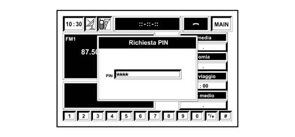
After entering a valid PIN code, the following screen appears. The user can display the phone number to be called on the left part of the display.
The lower part shows icons with numbers from 0 to 9 and the “ */+ “ and “ # “ symbols found on a normal phone keypad.
A menu with these items appears on the right side of the display:
- OTHER MENUS
- FREQUENT NUMBERS
- LAST NOS RECEIVED
- LAST NOS CALLED
- ADDRESS BOOK
- WAP
- VOICE MEMO
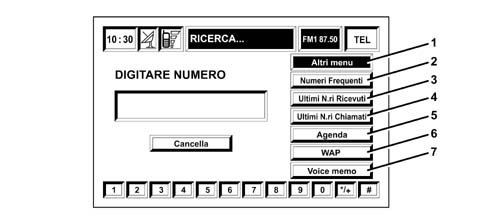
1 - Other menus
2 - Frequent numbers
3 - Last numbers received
4 - Last numbers called
5 - Address book
6 - Wap
7 - Voice memo
The Telephone Module functions are the same as for a mobile phone, i.e. in addition to PIN code input/update and emergency calls without a SIM card, the following are also available:
- call-up of phone numbers saved on the SIM card
- input of a new phone number on the SIM card
- deletion of a phone number from the SIM card
- information on SIM card status (correct or incorrect input)
- list of the last 10 numbers dialled
- list of the last 10 calls received
- text messages
- DTMF settings
- select network access provider
- set incoming call volume
- display remaining credit in the case of prepaid SIM cards
- display signal field intensity and other status reports by means of icons and messages
Incoming calls
Whichever Connect system mode is active, when a phone call is received, a dialogue box appears over the current display window as shown in the following figure.
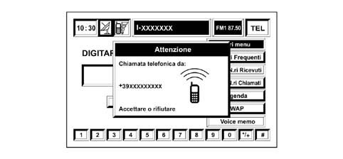
To accept the call, give the key with the handset symbol a short press
To end the call, give the key with the handset symbol a short press
To refuse the call, give the key with the handset symbol a long press
Outgoing calls
To make a call, go into Telephone mode (TEL key), dial the required user number using the 12 letter/number keys at the bottom. To use an international prefix ("+" character), give the "0" key a long press.
After dialling the required phone number, give the key with the "handset" symbol a short press.
Wap mode
The term WAP stands for: WIRELESS APPLICATION PROTOCOL.
WAP technology makes it possible to access the Internet using a mobile phone when no computer is available.
WAP browsing is relatively similar to conventional browsing on the PC but the same performance cannot be expected as with PC Internet access and an ADSL (“Asymmetric Digital Subscriber Line”: a technique that allows data to be transferred at high speed over normal phone lines using special Modems) because the graphics are very poor with WAP and the information is reduced to the essentials.
Because WAP technology is specific, mobile phones cannot be used to access ordinary WEB sites as with a PC.
The Internet supports WEB pages produced with language such as HTML (“Hyper Text Markup Language”: the international language of electronic texts - hypertexts) that are displayed on a PC by means of BROWSERS (Navigators, such as: NETSCAPE NAVIGATOR, INTERNET EXPLORER, etc…).
WAP is based on a different language: WML (Wireless Markup Language) with its own Script (another word for Program. usually indicates a program written in a particular language to perform tasks connected with the operating system) with its own image formats and also requiring its own , BROWSER or MICRO- BROWSER to display WEB pages.
These BROWSERS are built into the latest WAP mobile phones: if you enter the required settings (indicated below), you are able to access the required WAP sites.
For WAP phones, addresses are also in “ HTTP:// ”; the format used for the WEB.
WAP pages are located on an HTTP Server and their technical operation is as follows: when a WAP address is entered on the display of a mobile phone, the phone forwards an HTTP request for a WML page resident on a WEB Server.
The request is received over the GSM network by the WAP GATEWAY that forwards it to the WEB Server by means of a coding/decoding procedure.
At this point, the requested page returns to the WAP GATEWAY that codes/decodes it to route it to the mobile phone that originated the request.
This is what happens when the requested content is already in WML format (for mobile phones).
The requested pages are often in HTML format (for PC). In this case, the WAP GATEWAY acts as a HTML - WML translator in real time.
Text messages
In TEL mode, the user can access the OTHER MENUS screen from the main menu and then select the text message service (Short Message Service - SMS) that allows the reading and sending of short messages up to 160 characters via the GSM phone.
Remember that to user the text message service, you need to enter the Phone Number of the Service Centre of the Service Provider that the user intends to use.
To set the service centre phone number, select the following from the text message (SMS) menu: "Centre number".
Dial the Service Centre telephone number using the multifunction keys (the service centre phone number is supplied by the user's SIM card network provider).
When in OTHER MENUS, select OPTIONS to display the following menu:
- Network operator: to select a Network Provider.
- PIN: to manage the PIN code.
- Information: to display information on the GSM module (Provider name, IMEI code (International Mobile Equipement Identity), etc…).
- Anonymous: used to conceal your phone number from the person called.
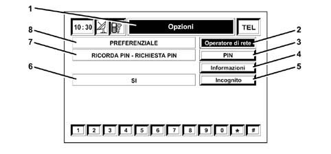
1 - Options
2 - Network operator
3 - PIN
4 - Information
4 - Anonymity
6 - Yes
7 - PIN reminder - PIN request
8 - Preferential
Select SETTINGS to display the following menu:
- Ringing volume: used to adjust the phone ringing volume
- Repeat Dial: if the line is engaged, this automatically redials the call (the number of attempts is set by the system)
- Call Transfer: activates or deactivates call transfer
- Call transfer number: enter the phone number to which the call is to be transferred
- Enable incoming call announcement: enables or disables incoming call announcement
- OK: to confirm the choices
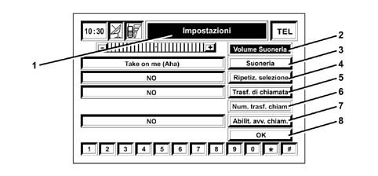
1 - Settings
2 - Ring volume
3 - Ring tone
4 - Ring repetition
5 - Call transfer
6 - Call transfer number
7 - Enable incoming call announcement
8 - Confirm key
NAVIGATION SYSTEM MODULE
Operation
The navigation system allows you to reach a destination set by the user by giving visual and acoustic instructions.
The navigation module built into the NIT receives data on progress (forward motion and reverse) and direction changes from information made available on the CAN network by the NBC. It cross-checks this with information received from GPS satellites by means of the GPS aerial on the car roof to calculate the Estimated Car Point (car location).
Upon initial activation and each time the battery is disconnected, the GPS takes about 15 minutes to activate.
The navigation system takes about 100km to self-regulate accurately from the first system start-up and when the tyres are changed.
If the engine is turned off and the vehicle is moved with the system off (e.g. on a pick-up truck), at the next key-on, the GPS system will take a few minutes to determine the car's new position.
The navigation CD-ROM drive is located on the front of the Connect system and is the same as used for audio CDs.
It is not therefore possible to use the audio player and the navigation drive simultaneously: The navigation system can, however, work partly even without the navigation CD-ROM inserted.
Route guidance
The main function of the Navigation module is called Route Guidance. This is responsible for extracting, managing and processing the information required to guide the user to the set destination.
These activities are, basically:
- ROUTE CALCULATION: Calculation of the route between the current position and the destination. Route calculation with multiple destinations. Route recalculation in the case of deviation from the current route. Calculation of an alternative route.
- TRUE ROUTE GUIDANCE: Identification of the position of the vehicle on the route (and calculation of the distance to the destination); Identification of junctions along the route; Identification of manoeuvres at the junctions along the route (and graphic and voice instructions for the user): Calculation of the distance to the next junction where the user has to make a turn; junction zoom function in built-up areas.
- DIGITAL MAPS: The official M. MARELLI CD ROM contains a Map Database that is made available to all other system functions. Access to any map data (segments, areas, locations etc.) required by other modules takes place through one of the functions available on this CD ROM.
- COMPLETE DATA BASE MANAGEMENT: If a map CD-ROM is present, the navigation function uses the entire data base available (map list, points of interest, etc.).
- USE OF REDUCED DATABASE WHEN CD-ROM NOT PRESENT (LISTENING TO A MUSIC CD): It is possible to listen to an audio CD in the CD player during the navigation process. Simply following the procedure described. The map CD should be inserted in the CD player for the entire duration of the entering the destination and route calculation activities. At the end of this processing, the CD ROM can be removed using the eject button. At this point the system will: 1) automatically load the route calculated into the memory; 2) eject the map CD. The audio CD can now be inserted to start listening. Under these circumstances one part of the map information is available (names of towns and names of roads) relating only to the segments of the route. In any case, the reduced data base in the CONNECT memory allows deviations to the route with automatic recalculations without the need to reinsert the CD-ROM. However, the efficiency of these recalculations depends very much on the length of the original route. When the route data in the memory is not sufficient to continue the navigation process, there is a request to reinsert the map CD. If the system is switched off during navigation without a CD ROM, the next time it is switched back on, the map CD must be inserted to access the navigation functions.
With the key ON, the Connect and Navigation system mobile are activated. A message appears reminding the customer that the navigation system is a tool that can help guide through traffic but the reponsibility always lies with the driver and the highway code must be respected at all times. When the control knob is pressed, the vehicle is the vehicle is located by the satellites and then the vehicle position co-ordinates are displayed as shown in the figure below.
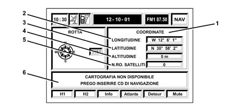
1 - Co-ordinates
2 - Longitude
3 - Latitude
4 - Altitude
5 - Number of satellites
6 - Map not available, please insert the navigation CD
After location, the following screen appears showing a map with the car's position and the main menu on the left.
- OTHER MENUS
- ADDRESS SELECTION
- RG ACTIVE
- VOLUME
- SET ROUTE
- SCALE
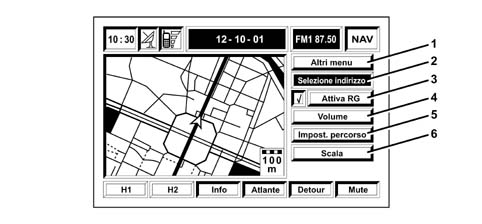
1 - Other menus
2 - Select address
3 - RG active
4 - Volume
5 - Set route
6 - Scale
The user can access the following submenus from this menu:
- from OTHER MENUS:
- PREVIOUS MENU
- CHANGE SCREEN
- DELETE DESTINATION
- MAP PREFERENCES
- VOICE MEMO
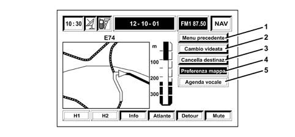
1 - Previous menu
2 - Change screen
3 - Delete destination
4 - Map preference
5 - Voice memo
from SELECT ADDRESS:
- OTHER MENUS that give access to: PREVIOUS MENU, HOME1, HOME2
- ADDRESS
- POINTS OF INTEREST
- LAST DESTINATIONS
- ADDRESS BOOK
- RDS- TMC (not available in Italy)
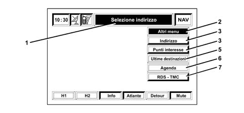
1 - Select address
2 - Other menus
3 - Address
4 - Points of interest
5 - Latest destinations
6 - Address book
7 - RDS - TMC
The item RDS - TMC allows the system to identify events near the vehicle or near to an address by receiving information transmitted by certain radio stations that offer this type of service.
The events are divided into 3 categories:
- TRAFFIC: information on traffic and road conditions
- WEATHER: information on atmospheric conditions
- INFO: general information
- ALL: all types of information
This information helps the driver drive to the destination but cannot be used to set a destination.
A list of icons used for RDS - TMC transmissions is shown below
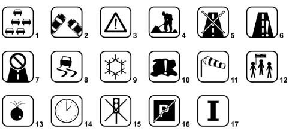
1 - Queue
2 - Accident
3 - General hazard
4 - Roadworks
5 - Road closed
6 - Lane closed
7 - Road not accessible
8 - Slippery road
9 - Ice/snow
10 - Fog
11 - Wind
12 - Cortege, procession, demonstration
13 - Explosion risk
14 - Delays
15 - Traffic lights out of service
16 - Parking
17 - Forecasts
From RG ACTIVE: This voice activates or deactivates navigation system voice messages. It does not have submenus
From VOLUME: this option is used to adjust the volume of navigation system voice messages. It does not have submenus
From SET ROUTE:
- ROUTE TYPE
- MOTORWAY
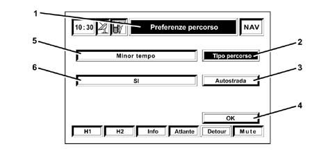
1 - Route preferences
2 - Route type
3 - Motorway
4 - Confirm key
5 - Yes
6 - Less time
The first function allows you to choose ROUTE TYPE: SHORTEST TIME or SHORTEST DISTANCE. In the latter case, the user can choose to calculate the route PREFERABLY MOTORWAYS or AVOIDING MOTORWAYS.
From SCALE: this option brings up a window where the user can select the scale of the map displayed on the screen.
Address book
The CONNECT contains two different address books: one for the phone and the other for the navigation system. The purpose of both is to make it easier to enter data (a phone number or destination) required by the user without going through a long procedure each time.
This operation may be carried out once only and the result is saved in CONNECT and associated with a memorable name. Then all you have to do is identify a saved option by selecting from a list or entering the memorable name.
Both address books are also stored in a back up memory (flash memory). This means that information stored persists even after the system has been turned on and off or after the battery has been disconnected.
Phonebook
The following fields are present in the phone book:
- name: memorable label for fast access to the list.
- Phone number: number used by CONNECT for calls.
- Position: origin of the item in the list.
- Voice recognition: voice sample for activation via voice recognition.
Name and number may be entered by the user during creation of a new address book item. In this case, the origin field indicates that the item is stored permanently in the CONNECT internal address book. Or Name and Number may be present on the SIM Card that the user has entered in the CONNECT SIM Reader. The System also displays this information as phone book items. After the Card has been inserted, the address book management module reads all the items on the Card and makes a copy by creating new temporary items if the name/number pair is not already present in the CONNECT address book. In this case, the position field indicates that the item comes from the SIM CARD.
This item type is deleted from the address book when it is downloaded or the system is turned off.
The following phone book functions are available to the user:
- enter new item
- delete all items in the phonebook
- listen to/delete all voice samples recorded by the user
- select item (open detailed window).
Detailed window:
- sent call to the selected number
- modify an individual item (name, number, listen/modify)
delete an individual voice sample:
- delete an individual item
- save an individual item in the Frequent Number list.
It is also possible to copy all the items from the CONNECT phonebook to the SIM Card and viceversa.
It is also possible to copy the contents of the phonebook on the SIM Card inserted to another SIM Card.
Navigation system address book
The following fields are present in the navigation address book:
- name: memorable label for fast access to the list.
- Description of geographical location defined by user: string consisting of town name/street name or name of associated POI...
- Voice sample
- Co-ordinates: place co-ordinates (not visible to user and used internally for localisation or route calculation).
- The item may be entered in the address book when the destination is entered. It is also possible to associate a voice sample to be used to call up the address by means of the voice recognition function.
The functions available to the user for the address book are similar to those available for the phone book:
- delete existing item
- select item
- modify.
TRIP COMPUTER MODULE
The Trip Computer module integral with the Connect manages and calculates a lot of information that can then be displayed on screen to supply a set of useful data on the route followed by the user.
Some information comes directly from the Navigation module, others comes from the various vehicle Nodes. For this reason, the Trip computer is fully operational only when the the ignition is ON and the network wakes up and can carry information required by the Trip Computer.
When the TRIP key is pressed, the TRIP COMPUTER module is activated and a screen appears with the following information:
- ARRIVAL TIME
- DISTANCE TO DESTINATION
- SPEED LIMIT
- RANGE
- INSTANTANEOUS FUEL CONSUMPTION
- TRAVELLING TIME
- DISTANCE TRAVELLED
- AVERAGE SPEED
- AVERAGE FUEL CONSUMPTION
The Trip module is able to calculate this data using information made available by other nodes on the CAN network.
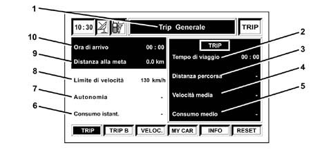
1 - General trip
2 - Trip time
3 - Distance travelled
4 - Average speed
5 - Average fuel consumption
6 - Instantaneous fuel consumption
7 - Range
8 - Speed limit
9 - Distance to destination
10 - Arrival time
As the figure shows, the lower part of the screen shows 6 items for the following items:
- TRIP
- TRIP B
- SPEED
- MY CAR
- INFO
- RESET
To select this item, press the keys under the screen.
Press Trip (icon on the screen) to display information on the Main Trip. Press the Trip B key to display the same information but relating to Trip B.
The Main Trip and Trip B can be reset separately by pressing the RESET key.
When the SPEED key is pressed, a screen appears for the user to enter a speed limit and decide whether to enable alarm buzzer when the limit is exceeded.
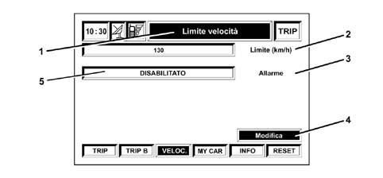
1 - Speed limit
2 - Limit (km/h)
3 - Alarm
4 - Modify
5 - Disabled
The user can press MY CAR to change the settings for a set of vehicle and Connect system parameters and operating modes, as described below.
Press INFO to display:
- RECOMMENDED VALUES
- PERSONAL INFO
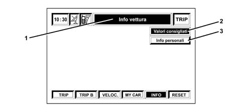
1 - Vehicle info
2 - Recommended values
3 - Personal info
Select RECOMMENDED VALUES to display information on service due dates.
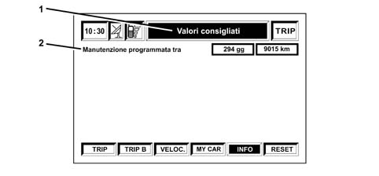
1 - Recommended values
2 - Service due in...
Select PERSONAL INFO to access a diary where it is possible to save events that require a reminder on a certain date and/or at a certain mileage.
To save the events, press ENTER.
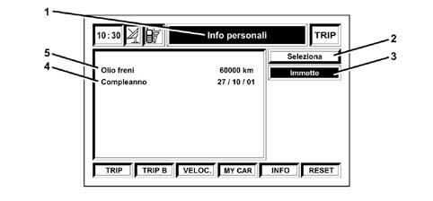
1 - Personal info
2 - Select
3 - Enter
4 - Birthday
5 - Brake fluid
A screen appears where the user can enter the data.
At the due date, a window will open on the Connect showing the ITEM entered by the customer.
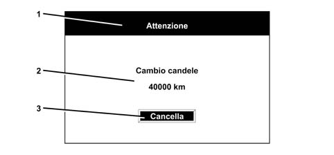
1 - Attention
2 - Change spark plugs
3 - Delete
EMERGENCY (SOS) AND ASSISTANCE (Targasys) SERVICES
The emergency, information and assistance services are managed by TARGASYS
The Connect makes two keys available for activating different Services.
- SOS KEY allows the activation of functions strictly connected with Rescue Services (doctor, roadside rescue) managed on subscription by TARGASYS (a paid service available as an option), a personal number and the EMERGENCY number 112 (always available, even without a SIM card inserted).
- CONNECT KEY: allows the activation of operations linked to information Services managed under subscription by TARGASYS.
Operation
Press the CONNECT key to display the following screen.
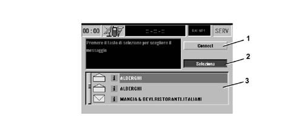
1 - Connect
2 - Select
3 - Services available
Press the selection key to activate the information service.
The services are paid services and provided by Targasys in all cases. They can be used to request a set of useful information and services.
Press the SOS key to display the following screen.
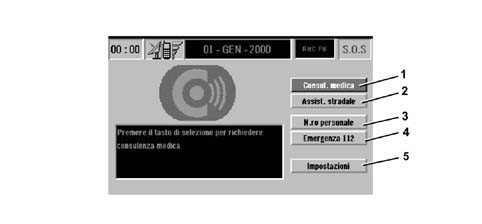
1 - Medical advice
2 - Roadside assistance
3 - Personal number
4 - Emergency 112
5 - Settings
In detail:
- MEDICAL ADVICE: this function is present only if TARGASYS services are enabled.
- ROADSIDE ASSISTANCE: this function is present only if TARGASYS services are enabled.
- PERSONAL NUMBER: this function is present only if the phone is on and if the SIM card is entered with the PIN keyed in and if the number has been set previously.
- EMERGENCY 112: this function allows a phone call to be made to the number 112 without the need to call up the phone menu and key in the number. 112 is the emergency number for all Countries where this public service is available. An Emergency 112 call can always be made, even if no SIM card is present in the slot.
- SETTINGS: this function allows certain operating modes to be entered and adjusted.
MY CAR FUNCTION
The MY CAR set up function can be used to set a series of vehicle and Connect system parameters and operating modes.
When the TRIP key is pressed followed by MY CAR, the screen shows the settings and selected language. The lower part of the display shows the following icons:
- LANGUAGE
- DATA
- MEASUREMENTS
- CONNECT
To select this item, press the keys under the screen.
Press LANGUAGE to display a list of available languages for texts and voice messages.
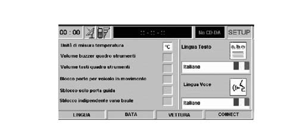
Press DATA to display a screen that allows the user to change the data and time.
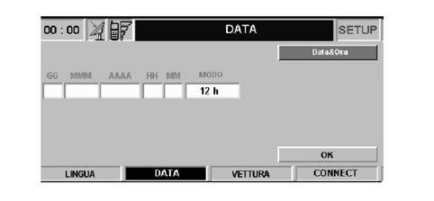
Press VEHICLE to access a special SET UP menu for the vehicle that is diviced into 2 different submenus.
The module comprises:
- NEXT MENU
- INSTRUMENT PANEL BUZZER VOLUME: this adjusts the volume of fault/warning messages managed by the Instrument Panel
- INSTRUMENT PANEL KEY VOLUME: adjusts and cuts out (if necessary) the volume of the beep issued when the keys on the dashboard left panel are pressed
- DOOR LOCK FOR VEHICLE IN MOTION: activation or deactivation of the automatic door lock over a certain speed.
- RELEASE ONLY DRIVER'S DOOR: activation or deactivation of independent driver's door release.
- INDEPENDENT BOOT RELEASE: activation or deactivation of independent boot release.
- OK: confirm settings.
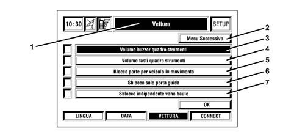
1 - Vehicle
2 - Next menu
3 - Instrument panel buzzer volume
4 - Instrument panel key volume
5 - Door lock for vehicle in motion
6 - Release only driver's door
7 - Release only boot
The NEXT MENU is active only if the vehicle is equipped with a RAIN/DUSK SENSOR: when active, a screen appears that allows sensor sensitivity to be adjusted.

Press CONNECT to access the relevant menu:
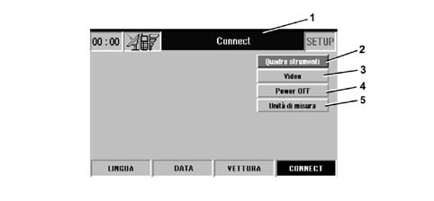
1 - Connect
2 - Instrument panel
3 - Screen
4 - Power OFF
5 - Measurement unit
In detail:
- INSTRUMENT PANEL: activates repetition of RADIO, TEL, NAV and TRIP B information on the instrument panel.
- SCREEN: allows adjustment of screen brightness and colour.
- POWER OFF: allows the user to choose a method for turning off the Connect: DEACTIVATION DEPENDENT ON THE IGNITION KEY or DEACTIVATION INDEPENDENT OF THE IGNITION KEY.
- UNITS OF MEASURE: used to select units of measure for some Trip data:
- MEASUREMENT UNIT DISTANCE (km / mi)
- MEASUREMENT UNIT FUEL CONSUMPTION (l/100km - km/l - mpg)
SELF-DIAGNOSIS
A Self-Diagnostic function known as ASSISTANCE can be run on the Connect.
Proceed as follows to activate this function:
- Wtih the Connect on (key on), press the TRIP key and then MY CAR;
- Then press the keys relating to the CONNECT icon at the bottom right of the screen
- While on this screen, press the keys for the CONNECT icon three more times: the ASSISTANCE icon will appear under the INSTRUMENT PANEL, SCREEN AND AUDIO and POWER OFF icons.

Select ASSISTANCE and then from the next screen SPEAKER TEST: a sound test will be carried out on all speakers to check their operation.
Move to: NEXT MENU and press the knob to display a screen that shows the outcome of tests performed on the Connect.
The Connect constantly carries out internal diagnostics, diagnosis of the FM/AM and GPS aerials and a diagnosis of the speakers. The GSM aerial is not tested.
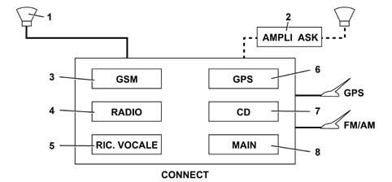
1 - Speakers (4)
2 - ASK HI-FI amplifier
3 - GMS module
4 - Radio module
5 - Voice Recognition module
6 - GPS module
7 - CD module
8 - Main module
Information is also supplied on the Connect SW and HW version and its component modules in addition to module production dates.
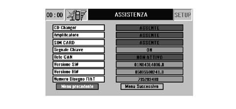
REAR VIEW OF THE CONNECT
The following figure shows the rear view and the connectors.
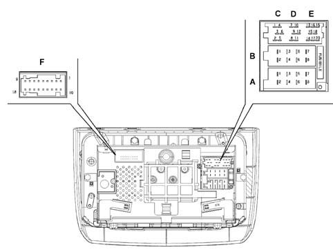
Connector C/D/E
Pin | Function |
|---|---|
1 | N.C. |
2 | N.C. |
3 | N.C. |
4 | N.C. |
5 | N.C. |
6 | IGNITION-OPERATED POWER SUPPLY FOR BOSE AMPLIFIER |
7 | N.C. |
8 | N.C. |
9 | N.C. |
10 | INPUT 1 FROM STEERING WHEEL |
11 | INPUT 2 FROM STEERING WHEEL |
12 | EARTH REFERENCE (MUTE) |
13 | Rx CD CHANGER BUS |
14 | Tx CD CHANGER BUS |
15 | DIRECT POWER SUPPLY FOR CD CHANGER |
16 | IGNTION-OPERATED POWER SUPPLY FOR CD CHANGER |
17 | CD CHANGER BUS EARTH |
18 | AUDIO REFERENCE FROM CD CHANGER |
19 | RESERVED |
20 | RESERVED |
Connector B
Pin | Function |
|---|---|
1 | + RIGHT REAR SPEAKER |
2 | - RIGHT REAR SPEAKER |
3 | + RIGHT FRONT SPEAKER |
4 | - RIGHT FRONT SPEAKER |
5 | + LEFT FRONT SPEAKER |
6 | - LEFT FRONT SPEAKER |
7 | + LEFT REAR SPEAKER |
8 | - LEFT REAR SPEAKER |
Connector A
Pin | Function |
|---|---|
1 | B - CAN B |
2 | RESERVED |
3 | B - CAN A |
4 | IGNITION-OPERATED POWER SUPPLY |
5 | N.C. |
6 | N.C. |
7 | DIRECT POWER SUPPLY |
8 | EARTH |
Connector F
Pin | Function |
|---|---|
1 | N.C. |
2 | N.C. |
3 | REVERSE SIGNAL INPUT (N.C.) |
4 | N.C. |
5 | N.C. |
6 | INPUT FROM INTIMITY HANDSET (N.C.) |
7 | AUDIO SIGNAL TO INTIMITY HANDSET (N.C.) |
8 | MICROPHONE INPUT FROM INTIMITY HANDSET (N.C.) |
9 | INPUT FROM MICROPHONE FOR HANDSFREE OPERATION (MIC. IN) |
10 | N.C. |
11 | INPUT FROM MILOMETER |
12 | ELECTRONIC EARTH |
13 | CRASH OUTPUT NEGATIVE SIGANL FROM AIRBAG CONTROL UNIT |
14 | N.C. |
15 | N.C. |
16 | MICROPHONE INPUT FROM INTIMITY HANDSET (N.C.) |
17 | AUDIO OUTPUT TO INTIMITY HANDSET (N.C.) |
18 | INPUT FROM MICROPHONE FOR HANDSFREE OPERATION (MIC. IN REF) |